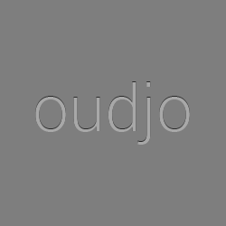

<!DOCTYPE html>
<link rel="import" href="../bower_components/polymer/polymer.html">

<link rel="import" href="../bower_components/core-icon/core-icon.html">
<link rel="import" href="../bower_components/core-icons/av-icons.html">
<link rel="import" href="../bower_components/paper-shadow/paper-shadow.html">
<link rel="import" href="../bower_components/paper-button/paper-button.html">
<link rel="import" href="../bower_components/paper-progress/paper-progress.html">
<link rel="import" href="../bower_components/paper-slider/paper-slider.html">

<polymer-element name="oudjo-controller">
    <template>
        <style>

        .container {
            width: 250px;
        }

        #album-art {
            width: 250px;
            height: 250px;
        }

        #song-title {
            font-size: 20px;
            color: #424242; /* Grey 800 */
        }

        #song-artist {
            color: #616161; /* Grey 700 */
        }

        #button-previous {
            width: 50px;
        }

        #button-next {
            width: 50px;
        }

        .control-button {
            margin-left: 0px;
            margin-right: 0px;
            /*color: #eeff41; /* Lime A200 */
        }

        .control-button::shadow #ripple {
            color: #c6ff00; /* Lime A400 */
        }
        </style>

        <paper-shadow class="container" z="4">
            <!-- Album art -->
            

            <!-- Title and artist -->
            <div>
                <paper-shadow z="1">
                    <div id="song-title">oudjo</div>
                    <div id="song-artist">--</div>
                </paper-shadow>
            </div>

            <!-- Control buttons -->
            <div layout horizontal>
                <paper-button id="button-previous" class="control-button">
                    <core-icon icon="av:skip-previous"></core-icon>
                </paper-button>

                <paper-button id="button-play" class="control-button" flex>
                    <core-icon icon="av:play-arrow"></core-icon>
                </paper-button>

                <paper-button id="button-next" class="control-button">
                    <core-icon icon="av:skip-next"></core-icon>
                </paper-button>
            </div>

            <div layout vertical>
                <!-- Progressbar -->
                <div layout horizontal>
                    <paper-progress flex></paper-progress>
                </div>

                <!-- Volume -->
                <div layout horizontal>
                    <paper-icon-button icon="av:volume-up"></paper-icon-button>
                    <paper-slider flex self-center></paper-slider>
                </div>
            </div>
        </paper-shadow>
    </template>

    <script>
    Polymer({});
    </script>
</polymer-element>
